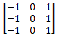
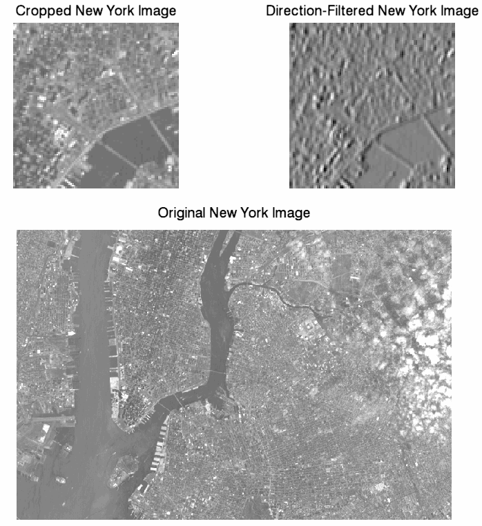

A directional filter is an edge detector that can be used to compute the first derivatives of an image. The first derivatives (or slopes ) are most evident when a large change occurs between adjacent pixel values.
Directional filters can be designed for any direction within a given space. For images, x - and y -directional filters are commonly used to compute derivatives in their respective directions. The following array is an example of a 3 x 3 kernel for an x -directional filter:

This is just one example of a possible kernel for an x -directional filter. Other filters may include more weighting in the center of the non-zero columns.
The following example uses the
CONVOL
function to determine the first derivatives of an image in the
x
-direction. The resulting derivatives are then scaled to show negative, zero, and positive slopes only. This example data is available in the
examples/data
directory of your IDL installation. The code shown below creates the following images:

; Import the image from the file.
file = FILEPATH('nyny.dat', $
SUBDIRECTORY = ['examples', 'data'])
orig_imageSize = [768, 512]
; Use READ_BINARY to read the image as a binary file.
orig_image = READ_BINARY(file, DATA_DIMS = orig_imageSize)
im = IMAGE(orig_image, $
TITLE="Original New York Image", $
POSITION=[.10, .025, .90, .55], DIMENSIONS=[800, 800])
; Crop the image to focus in on the bridges:
croppedSize = [96, 96]
croppedImage = orig_image[200:(croppedSize[0] - 1) + 200, $
180:(croppedSize[1] - 1) + 180]
im01 = IMAGE(croppedImage, $
TITLE="Cropped New York Image", $
POSITION=[.10, .625, .40, .925], /CURRENT)
; Create a kernel for an x-directional filter:
kernelSize = [3, 3]
kernel = FLTARR(kernelSize[0], kernelSize[1])
kernel[0, *] = -1.
kernel[2, *] = 1.
; Apply the filter to the image:
filteredImage = CONVOL(FLOAT(croppedImage), kernel, $
/CENTER, /EDGE_TRUNCATE)
; negfilteredImage = CONGRID(-1 > FIX(filteredImage/50) < 1)
im02 = image(filteredImage, $
TITLE = "Direction-Filtered New York Image", $
POSITION = [.60, .625, .90, .925], /CURRENT)